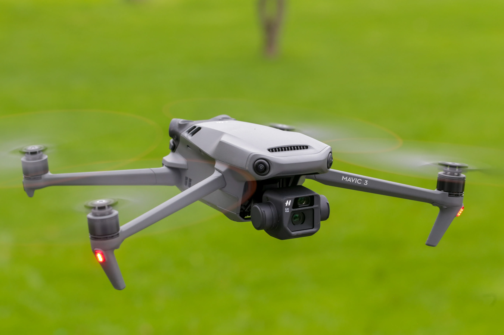

About
My name is Matt Aronson, the founder and president of Aronson Aerial. My company was born out of a love for both photography and flying drones. With Aronson Aerial, I try to capture the best angles of whatever job I am at.
I am registered as a Part 107 UAS Drone Operator under the Federal Aviation Administration. I personally ensure that Aronson Aerial will provide a quality and timely service, delivering beautiful aerial media to you. You can be sure you are in the right hands with Aronson Aerial.
Drones
The drone fleet at Aronson Aerial includes a DJI Phantom 3 Professional and the Mavic Air. Depending on the project, we will determine which drone will be best. Our drones capture crisp 4k video and photos. Our drones have both optical and digital stabilization.



Editing
Before the images are delivered, they are edited to eliminate any inconsistencies and to bring the photos to life! We use the professional Adobe Suite of products to edit, including Adobe Photoshop and Adobe Lightroom.